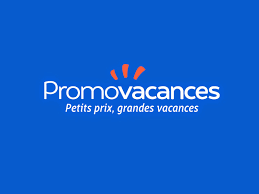
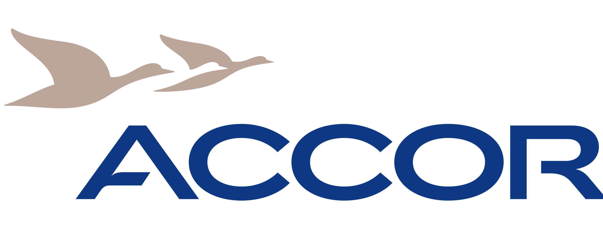

Objectif : Intégrer la formation Developpeur Web
Durant mon expérience de 11 années au sein du groupe Karavel/Promovacances.com, j'ai eu l'opportunité de travailler en étroite collaboration avec le service IT.
De la gestion du site, les fonctionnalités à améliorer, les tests en recette, les projets de connectivités ou bien encore le contenu rédactionnel.
Cet aspect de mon parcours professionnel m'a vraiment intéressé et dans le cadre de ma reconversion professionnelle, c'est pour moi une véritable évidence de m'orienter vers une formation certifiante en développement web.
Mon objectif est de pouvoir m'orienter également vers une formation permettant une employabilité assurée par la demande des entreprises dans ce secteur d'activité mais également poursuivre mon projet à moyen terme de créer mon entreprise. J'ai dans ce cadre suivi 4 formations à la CMA.
Mon parcours professionnel
De 2005 à 2016 : Karavel/Promovacances

Adjointe de la Direction du Service Production
- Coordination avec les différents métiers et les développeurs informatiques, de la conception, du développement, et de l'adaptation des outils aux besoins de leurs utilisateurs
- Coordination & assistanat administratif du service
- Formation & Management de l’équipe de Production (projets, gestion quotidienne du service)
- Elaboration et suivi du plan de production (choix des offres à packager & élaboration des business plan)
- Négociation des contrats, des conditions financières, et du niveau de qualité avec les prestataires
- Préparation & présentation des supports de communication et des plans d’actions commerciales
- Participation annuelle au salon du Tourisme (prospection)
Responsable Partenariats TO et équipe production
- Développements informatiques, contracting & suivi commercial des fournisseurs TO
- Management, recrutement & formation de l'équipe des assistants & coordinateurs (12 personnes)
- Définition, mise en place & adaptation des outils et process aux besoins métiers
- Suivi du respect de la charte éditoriale de l'offre en ligne
- Suivi & coordination de l’animation des ventes (opération exclusive, vente flash) pour les marques du groupe
Chef de produit
- Définition des objectifs de vente et de la stratégie commerciale à adopter via l’élaboration de Business Plan par destination
- Négociation des prestations terrestres (hôtels, réceptifs)
- Déplacements fréquents à l’International (suivi des produits et contrôle qualité)
- Création d'opérations d'animation et de promotion pour ces destinations
- Formation et management d’équipe
Gestionnaire de comptes Tours Opérateurs
- Négociation et mise en avant des offres
- Définition et application de la stratégie commerciale par destination
- Veille concurrentielle
- Validation de la qualité des prestations sur place
- Formation et management d’équipe
- Participation au développement informatique et à leur mise en place en interne
Assistante de production
- Mise en ligne des produits : rédaction des descriptifs, calcul des tarifs et sélection des visuels
- Suivi de la mise à jour des offres : actualisation des stocks, du catalogue produit et des promotions
De 2002 à 2005 : Groupe Accor

Attachée Commerciale Séminaires et Banquets
- Gestion des propositions commerciales
- Accueil des clients, organisation et suivi du déroulement des manifestations sur site
Mes formations
De 1998 à 2003 : Formation initiale
- 2002-2003 : Licence Professionnelle de Management Européen du Tourisme, Université Paris V, mention assez bien
- 2000-2002 : BTS Tourisme - Loisirs option Conception - Commercialisation, Vincennes
- 1999-2000 : Mise à niveau en Hôtellerie - Restauration, École Hôtelière de Paris Jean Drouant
- 1998-1999 : Première année de DEUG Sociologie - Anthropologie, Université Paris VIII
- 1998 : Baccalauréat général économique et social, mention assez bien
De 2016 à 2017 : Formation continue
- Tenir sa comptabilité sur EBP
- B.A.-BA de la comptabilité
- Créer son site vitrine
- Devenir chef d'entreprise
Mes centres d'intérêts
Mes sites préférés
- Coleka c'est un site d'échange pour collectionneurs
- OpenClassrooms j'y passe beaucoup de temps à me former
- Mondial Tissus à la recherche de nouveaux tissus et de tutos DIY
Réseaux sociaux